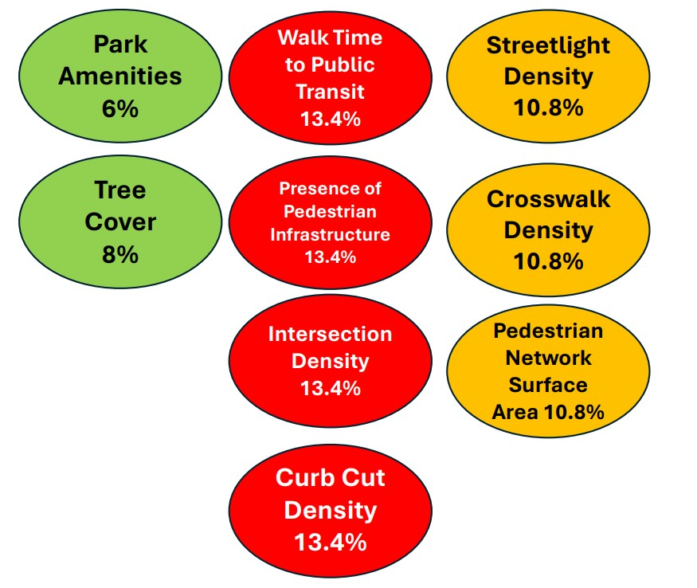

Methodology
OverView
The client had originally requested for several web maps, an ArcGIS Dashboard and a ESRI file geodatabase to showcase how walkable differeent areas of the city are, and use this information for planning purposes and use the information we gathered for further projects. After speaking with the client the team at STAC Enterprises also thought it would be a good idea to include an ArcGIS StoryMap as well as Survey using Survey123, to help showcase the information in a more in depth and easy to pick up manner and help field crews in completing and documenting assets associated with walkability.
Walkability Index and Models
With the Data that was provided to us by the client, along with some research into the demographics fo Peterborough Ontario, our team worked on creating a walkability index of the city based off of sefveral factors including:
- Park Amenities vs. Population (Park Amenities Density)
- Road Length within 400m of Transit vs. Total Road Length (Access to Transit)
- Streetlights vs. Road Length (Streetlight Density)
- Length of Roads That Contain Two Sidewalks vs. Road Length (Proportion of Roads with Two Sidewalks)
- Crosswalk Density vs. Arterial /Collector Length (Crosswalk Density)/li>
- Curb Cuts vs. Intersections (Curb Cut Density)
- Pedestrian Network Area vs. Road Network Area (Pedestrian Network Surface Area)
- Intersections vs. Road Length (Intersection Density)
- Vegetation Cover Area vs. Pedestrian Network Area (Shaded Pedestrian Area)
After taking all of these factors into play and weighting them against each other, we were able to come up with a final walkability index for the city of Peterborough, highlighting what areas of the city are most and least walkable.
